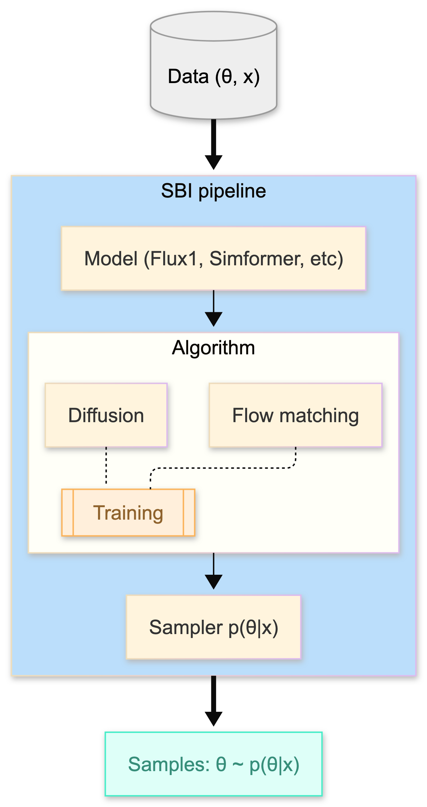

Conceptual Overview: How GenSBI is Structured#
This page explains the core concepts and architecture of GenSBI to help you understand how the different components work together.
High-Level Architecture#
GenSBI is built upon three core abstractions:
Models: Neural architectures such as Flux1 and Simformer.
Sampling Algorithms: Flow Matching and Diffusion (including both EDM and Score Matching variants). Each abstraction defines its own ODE/SDE formulations and implements the corresponding solvers.
Pipelines: Workflows that orchestrate the end-to-end process of training, validation, and sampling.
{kind=link}

Changing or customizing any of these components allows you to adapt GenSBI to your specific inference problems.
Core Concepts#
1. Models#
Models are the neural network architectures that learn to approximate posterior distributions. They are standard Flax NNX modules.
GenSBI provides three main model architectures:
Flux1: A double-stream transformer using Rotary Position Embeddings (RoPE). Best for high-dimensional problems.
Simformer: A single-stream transformer that explicitly embeds variable IDs. Best for low-dimensional problems.
Flux1Joint: A single-stream variant of Flux1 for explicit joint modeling. Good for likelihood-dominated problems.
For detailed comparisons and selection guides, see Model Cards.
Note
GenSBI represents both parameters (\(\theta\)) and observations (\(x\)) with the tensor convention (batch, dim, channels).
dim_obs: number of parameter tokens (how many parameters you infer).dim_cond: number of conditioning tokens (how many observables you provide to the model).ch_obsandch_cond: number of values carried by each token.
Most SBI problems use ch_obs = 1 (one scalar per parameter token), while ch_cond can be > 1 (e.g., multiple detectors or multiple features per measurement). See Troubleshooting: Shape Mismatch Errors for a concrete example.
2. Model Wrappers#
Model Wrappers provide a standard interface for models to be used by ODE/SDE solvers during sampling. They standardize how models are called and provide methods for computing the vector field and divergence needed for numerical integration.
Three types of wrappers exist:
Unconditional: For unconditional density estimation
Conditional: For conditional inference (standard SBI: estimate θ given x)
Joint: For joint inference (estimate multiple variables simultaneously)
The wrapper provides:
Standardized calling interface for solvers
get_vector_field(**static_kwargs)method for ODE/SDE solution — accepts static keyword arguments that are baked into the vector field at creation timeget_divergence(**static_kwargs)method when needed for likelihood computationRuntime
model_extras(e.g., conditioning data) are passed dynamically viadiffeqsolve(args=model_extras), allowing a compiled sampler to be reused across different conditions without recompilation
Note: Wrappers are only used during sampling/inference. During training, the unwrapped model is called directly.
3. Recipes and Pipelines#
Recipes define complete end-to-end procedures for a specific task (e.g., SBI, VAE training). Pipelines are specific implementations of these recipes using particular generative modeling approaches (e.g., flow matching or diffusion).
Currently, GenSBI provides two main recipes:
SBI Recipe: For simulation-based inference
VAE Recipe: For training variational autoencoders
Pipelines handle all aspects of training and inference:
Data loading and batching
Training loop (optimizer, learning rate scheduling, early stopping)
Validation and checkpointing
Exponential Moving Average (EMA) of weights
Model wrapping for sampling
Model-specific Pipelines (convenience wrappers with sensible defaults):
Flux1FlowPipeline,Flux1DiffusionPipeline,Flux1SMPipelineSimformerFlowPipeline,SimformerDiffusionPipeline,SimformerSMPipelineFlux1JointFlowPipeline,Flux1JointDiffusionPipeline,Flux1JointSMPipeline
Unified Pipelines (model-agnostic, parameterized by a GenerativeMethod):
ConditionalPipeline: For conditional inference (standard SBI)JointPipeline: For joint inferenceUnconditionalPipeline: For unconditional density estimation
These unified pipelines accept any model that follows the standard interface, and are parameterized by a GenerativeMethod (FlowMatchingMethod, DiffusionEDMMethod, or ScoreMatchingMethod). See Custom Models for details.
Example (model-specific pipeline):
from gensbi.recipes import Flux1FlowPipeline
pipeline = Flux1FlowPipeline(
train_dataset=train_iter,
val_dataset=val_iter,
dim_obs=3,
dim_cond=5,
params=flux1_params,
)
pipeline.train(rngs=nnx.Rngs(0))
samples = pipeline.sample(key=key, x_o=x_observed, nsamples=10_000)
Example (unified pipeline with custom method):
from gensbi.recipes import ConditionalPipeline
from gensbi.core import FlowMatchingMethod
pipeline = ConditionalPipeline(
model, train_ds, val_ds,
dim_obs=3, dim_cond=5,
method=FlowMatchingMethod(),
)
4. Flow Matching vs. Diffusion#
GenSBI supports two approaches for generative modeling:
Flow Matching (Recommended)#
Concept: Learn a time-dependent vector field \(v_t(x)\) that transports samples from a simple prior (Gaussian noise) to the target data distribution.
Training: The model directly regresses the vector field generating the probability paths. We typically use Optimal Transport paths (straight lines), which leads to a vector field that is stable and easy to learn.
Sampling: Solve an Ordinary Differential Equation (ODE) from t=0 to t=1 along the learned vector field. The linear trajectories allow for fast and robust integration.
Why it’s better: Flow matching generally offers faster training and faster sampling than diffusion. The vector field with Optimal Transport paths behaves better than the score function, leading to straighter sampling trajectories that require fewer steps to solve.
Diffusion#
Diffusion models learn to reverse a stochastic process that gradually adds noise to the data. GenSBI provides two diffusion implementations:
EDM Diffusion (Karras et al., 2022) — Recommended for diffusion
Concept: The model learns a denoiser \(D_\theta(x; \sigma)\) that directly predicts the clean signal from noisy input, rather than learning the score function.
Training: Uses a carefully designed preconditioning and noise schedule in \(\sigma\)-space, which improves training stability.
Sampling: Iterates through a decreasing noise schedule, applying the denoiser at each step. Supports EDM, VP, and VE schedulers.
Score Matching (Song et al., 2021) — Classical approach
Concept: The model learns the score function \(\nabla \log p_t(x)\) at different noise levels to reverse the corruption process.
Training: Directly regresses the score function. Supports VP (Variance Preserving) and VE (Variance Exploding) SDEs.
Sampling: Solves the reverse SDE from \(t{=}T\) to \(t{=}\varepsilon\) for stochastic samples, or the equivalent probability flow ODE for deterministic samples.
Flow Matching is the recommended default in GenSBI. Within diffusion, EDM is preferred over Score Matching for its improved training stability and sampling speed.
For a deeper mathematical dive, see the Theoretical Overview. For available solvers and how to customize sampling, see Samplers and Solvers.
How Components Work Together#
Here’s what happens during training:
Data Loading: The pipeline gets batches of (observations, conditions) from your dataset.
Loss Computation:
Sample random time steps
t ∈ [0, 1]Create noisy versions of the data based on
tThe model predicts the velocity/noise as a function of (obs, cond, t)
Compare prediction to ground truth
Optimization:
Compute gradients
Update model parameters
Update EMA shadow weights
Validation:
Periodically evaluate on validation set
Save checkpoints if performance improves
Early stopping if validation loss diverges
During inference:
ODE Solving (Flow Matching):
Wrap the model to provide standard interface for the solver
Start with Gaussian noise
Use the wrapped model’s
get_vector_field()method with an ODE solverCondition-dependent data (e.g.,
cond,obs_ids) flows as runtimemodel_extrasthroughdiffeqsolve(args=...)Result: samples from the posterior distribution
Iterative Denoising (Diffusion):
Wrap the model for the SDE/discrete sampler
Start with pure noise (sampled according to the SDE prior distribution)
Iteratively denoise using the learned denoiser, with
model_extraspassed at each stepResult: samples from the posterior distribution
File Organization#
The codebase is organized into logical modules:
src/gensbi/
├── models/ # Neural network architectures
│ ├── flux1/ # Flux1 model
│ ├── flux1joint/ # Flux1Joint model
│ ├── simformer/ # Simformer model
│ ├── wrappers/ # Time/noise handling wrappers
│ └── losses/ # Loss functions
├── recipes/ # High-level training pipelines
│ ├── flux1.py
│ ├── simformer.py
│ └── ...
├── flow_matching/ # Flow matching components
│ ├── path/ # Interpolation paths
│ ├── solver/ # ODE solvers
│ └── loss/ # Flow matching loss
├── diffusion/ # Diffusion components
│ ├── sampler/ # Diffusion samplers
│ ├── sde/ # SDE definitions
│ └── loss/ # Diffusion loss
└── utils/ # Utility functions
Design Principles#
GenSBI follows these design principles:
Modularity: Components (models, wrappers, losses, solvers) are independent and composable.
Sensible Defaults: Pipelines come with reasonable default hyperparameters that work for many problems.
Easy Customization: You can override specific methods (e.g., optimizer, loss function) without rewriting everything.
JAX-Native: Built on JAX and Flax NNX for performance, automatic differentiation, and hardware acceleration.
Density Estimation Focus: Designed for conditional and unconditional density estimation with applications in simulation-based inference (neural posterior estimation, neural likelihood estimation, neural prior estimation) and general conditional density estimation tasks.
What’s a “Recipe”?#
The term recipe comes from the idea of providing a pre-packaged, tested combination of components that work well together—like a cooking recipe. Instead of manually combining a model, wrapper, loss, optimizer, and training loop, a recipe gives you a one-line solution:
pipeline = Flux1FlowPipeline(train_data, val_data, dim_obs, dim_cond, params)
pipeline.train(rngs)
samples = pipeline.sample(key, x_observed)
Behind the scenes, the recipe handles all the complexity.
Next Steps#
Now that you understand the structure:
Choose a Model: See Model Cards for guidance.
Set Up Training: Follow the Training Guide.
Run Inference: See the Inference Guide.
Validate Results: Use the Validation Guide.
Try Examples: Explore the Examples page and the GenSBI-examples repository.
If you want to extend GenSBI or add custom components, see the Contributing Guide and the API Documentation.